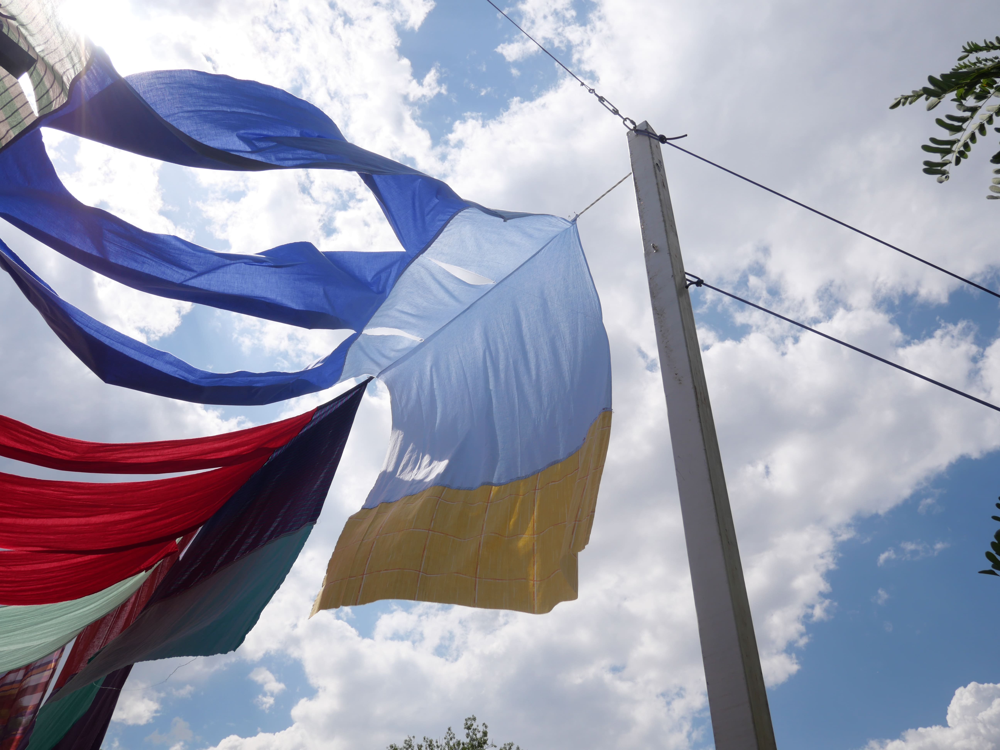
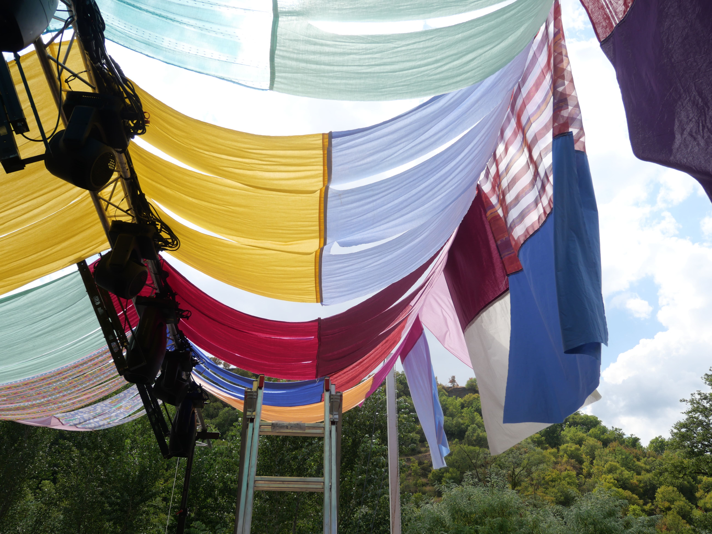
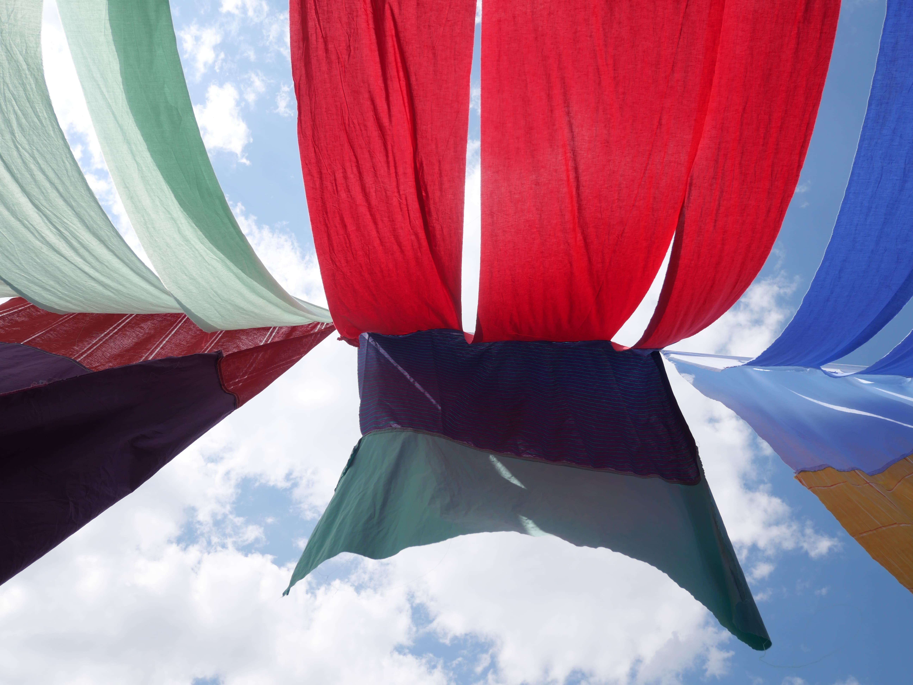
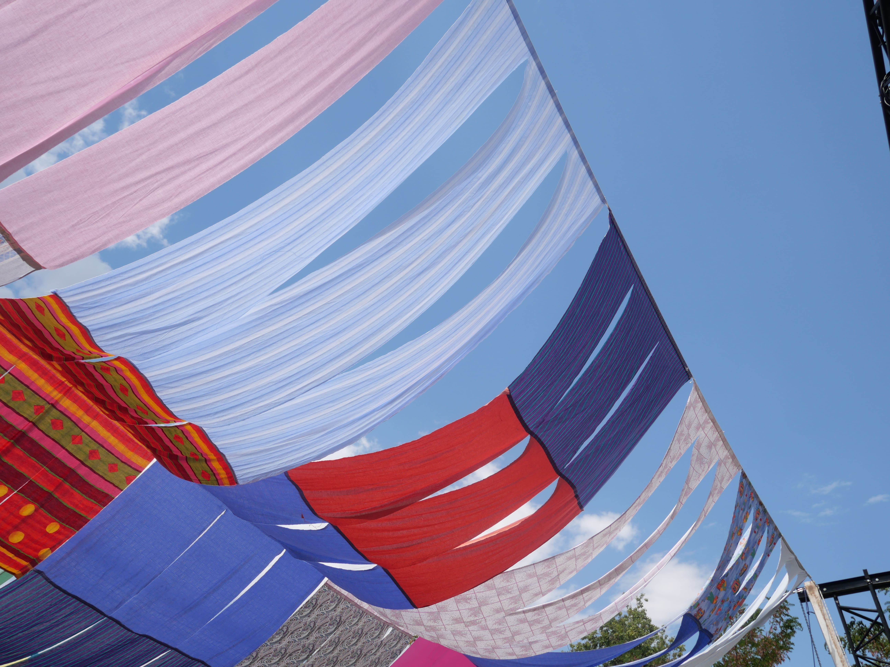

Mobilier Brut réunit six pièces — une table basse, deux bancs, une console et deux luminaires — pensées comme un prolongement des projets d'architecture menés en parallèle. La collection assume des assemblages visibles plutôt que de les dissimuler.
Le chêne massif est laissé brut de sciage sur les chants, seules les surfaces d'usage sont poncées et huilées. Le métal, patiné à la cire, développe une réflexion et une oxydation contrôlée qui continue d'évoluer avec le temps et l'usage.
Chaque pièce est réalisée à la commande dans un atelier partenaire en Bourgogne, ce qui limite volontairement la production et garantit un suivi de fabrication pièce par pièce.



